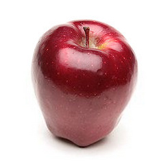

这么多年后，我听英语数字的能力还是进步缓慢。虽然小学英语课就有这方面的联系，但我现在听一串电话号码还是无法一次听出超过四位。电话留言说的号码我要平均听五遍才行。而听汉语说电话号码则轻松凭声音记忆全部。这是永远就没戏了的节奏吗？
从来没听说过蛇果这个东西。按这个解释不就是苹果的一种吗？ //@慢慢_张:地厘蛇…//@二次元种草机:可以，这很地厘蛇！//@吃吃教叫煮: ……可以，这很港译@独鱼仅一:我一直分不清楚蛇果和苹果。比如配图就是蛇果。最近才知道，“蛇果”是“红地厘蛇果”的简称。而“红地厘蛇果”是香港的翻译，英文是Red Delicious Apple，红色美味苹果。尼玛我要掀桌…… 